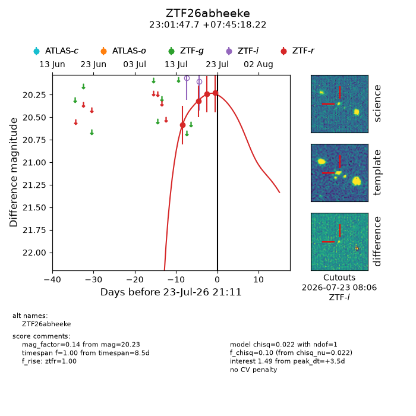
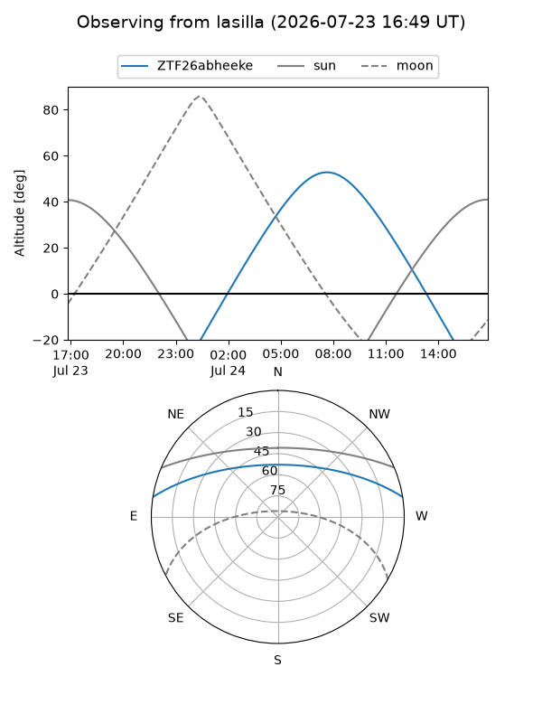
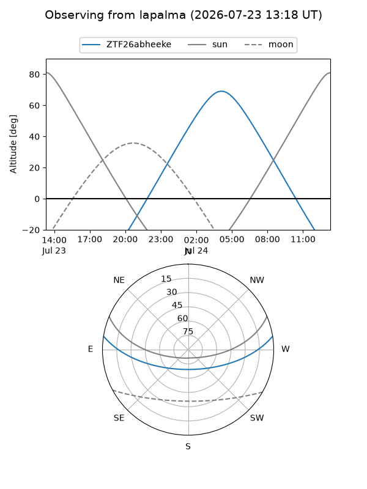
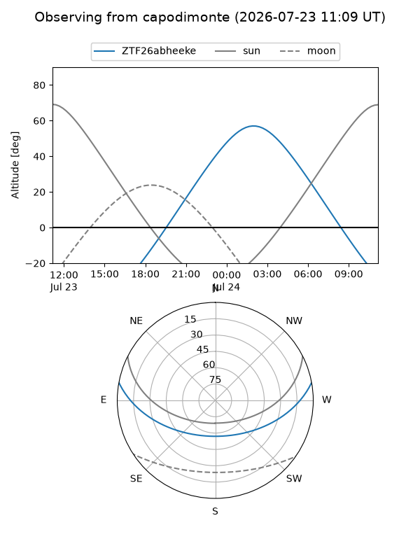
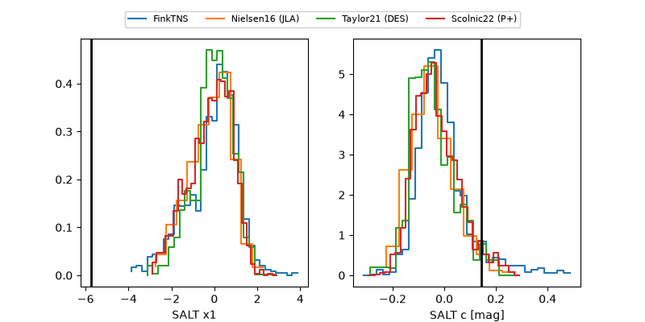

ZTF26abheeke
Target ZTF26abheeke at 2026-07-23 21:14
Aliases and brokers:
FINK-ZTF: ztf.fink-portal.org/ZTF26abheeke
Lasair-ZTF: lasair-ztf.lsst.ac.uk/objects/ZTF26abheeke
ALeRCE-ZTF: alerce.online/object/ZTF26abheeke
Direct TNS query: direct search
alt names
ZTF26abheeke (ztf,fink_ztf)
Coordinates:
equatorial (ra, dec) = 345.4486,+7.75506
equatorial (HMS+DMS) = 23:01:47.67,+07:45:18.22
galactic (l, b) = (81.7383,-46.16289)
Flags:
peak dt: +3.5
Photometry:
last ztfr=20.23
4 ztfr detections
Lightcurve

Visibility



Additional plots
